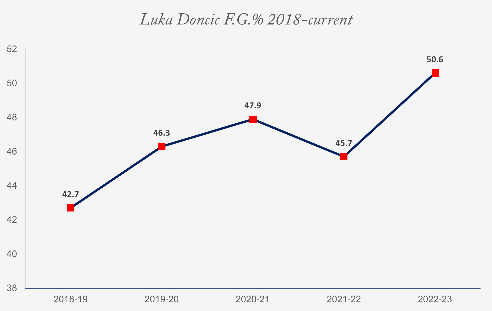

But speaking of Dallas, there seems to be at least one person holding it all together, despite everything: Luka Doncic.
The point/shooting guard for Dallas has had nothing but a stunning career. When he entered the N.B.A. four seasons ago, a string of accolades from Real Madrid and EuroLeague already behind him, people immediately recognized he would be a force to be reckoned with. He ended that year averaging 21.2 points per game with 42.7 percent of field goals made, and eight triple-doubles to boot — really, the only downside in his rookie stats was a negative plus-minus, which never happened again in subsequent seasons.
Data as of 5 December 2022, courtesy of N.B.A.
What set him apart was how … un-athletic he seemed at face value. He wasn’t a sprinter, he wasn’t some Professor-level ball-trickster, and he certainly wasn’t the short-but-nimble three-point-maniac like Stephen Curry, either. But there’s a certain determination and deftness to his play, coupled with an impeccable grasp of fundamentals, that makes the ball go straight through his defenders. “He plays the puppet master game with you,” said former N.B.A. All-Star Gilbert Arenas of Doncic in a podcast. Patience is a virtue in a sport dominated by athleticism, and Luka had it nailed from the start.
Since that season (in which he won Rookie of the Year), it’s only been up and up for the Slovenian. His sophomore year, he made a career-high seventeen triple-doubles, along with other improvements across the board that together landed him in the All-Star team. He shined in the 2021 playoffs, with a whopping 35.7 P.P.G., averaging ten assists, eight rebounds, and a three-point percentage on par with Curry’s. Audiences reveled in the Mavs’ first Western Conference round with the Clippers, with Kawhi Leonard finally stepping up as a worthy match to Doncic, and both players unleashing what many saw as a glimpse of their fullest potential. “This how Luka imagined the N.B.A. defense was gonna actually be like growing up,” wrote one user in a YouTube comment, to 410 likes.
Though Luka’s Mavs ultimately lost that round four to three, the loss has only encouraged him. Now twenty-three, he’s a major contender in the Kia M.V.P. Ladder (Boston’s Jayson Tatum just clinched the top spot from him last week); he’s leading the league with 33.4 P.P.G. this season, having gotten at least two forty-plus-point games a month since October, and five triple-doubles to boot. Doncic is chugging out stats like a freight train, and so far he’s showing no sign of stopping.
It’s too early to tell whether he will be crowned M.V.P.; Tatum, Denver’s Nikola Jokic, Milwaukee’s Giannis Antetokoumpo, Phoenix’s Devin Booker, and — of course — Curry are all worthy contenders, and the competition is especially fierce this year. But unless something drastic happens, I would dare call it right now. Luka for M.V.P. ■